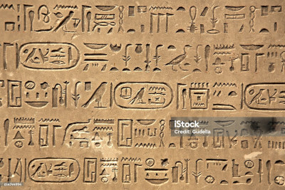

Cidade subterrânea ?
Pesquisadores da Itália e Escócia descobriram a existência de uma cidade subterrânea sob as Pirâmides de Gizé, no Egito, através de um estudo com raio-X. Os cientistas usaram uma tecnologia que transforma os sinais de radar em informações fônicas, que permitem a detecção de vibrações milimétricas. Bem abaixo da superfície do planalto, próximo à base da pirâmide, foram identificadas cinco estruturas idênticas, interligadas por caminhos geométricos. No interior de cada uma dessas estruturas, há cinco níveis horizontais e um teto inclinado. Abaixo dessas cinco estruturas, foram identificadas oito formações cilíndricas que aparentam ser poços verticais, ocos internamente e rodeados por caminhos espirais descendentes. Esses oito poços, alinhados verticalmente e dispostos em duas fileiras paralelas no sentido norte-sul, estendem-se até uma profundidade de 648 metros.
